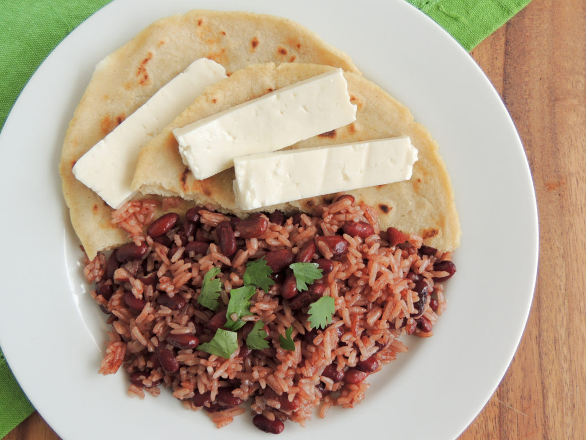

Lasagna
Home

Description
It’s rare to find a meal versatile enough to be eaten for breakfast,
lunch, or dinner. This is Gallo Pinto – a simple and delicious rice and
bean dish and perhaps the most traditional dish of Nicaragua. At
breakfast, it is usually served with fried or over-easy eggs. For lunch
and dinner, it can accompany anything from skirt steak and carne asada to
chicken and fish. It’s especially delicious topped with crumbled dry
cheese like cotija or a drizzle of crema. It’s also often eaten as a
simple and quick meal along with a thick, handmade corn tortilla topped
with mild, white cheese similar to Mexican queso fresco.
Ingredients
- 2 tablespoons light-tasting oil (vegetable, mild olive, canola)
- 1 red bell pepper , chopped
- 1 small yellow onion , chopped
- 2 cloves garlic , minced
- 2 cups cooked black beans , in 3/4 cup reserved cooking liquid*
- 1/4 cup Salsa Lizano **
- 3 cups cooked rice , preferably, day-old and refrigerated
- 1/4 cup chopped fresh cilantro
Steps
-
Heat oil in a large skillet over medium-high heat until shimmering.
Sauté chopped bell pepper and onions until peppers are soft and onions
are translucent, about 6-8 minutes. Add minced garlic and cook for 1
minute, until fragrant.
-
Add black beans, reserved cooking liquid, and Salsa Lizano, stirring to
combine. Simmer for 5 minutes, until slightly thickened and little bit
of the liquid is evaporated. Gently stir in cooked rice and cook until
heated through and most of the liquid is absorbed, about 3-5 minutes.
-
Stir in chopped cilantro. Season to taste with additional Salsa Lizano,
if desired, and serve.